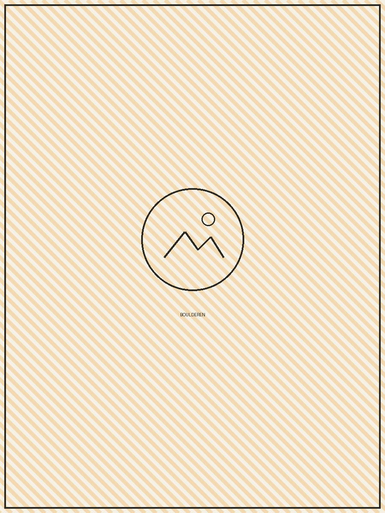
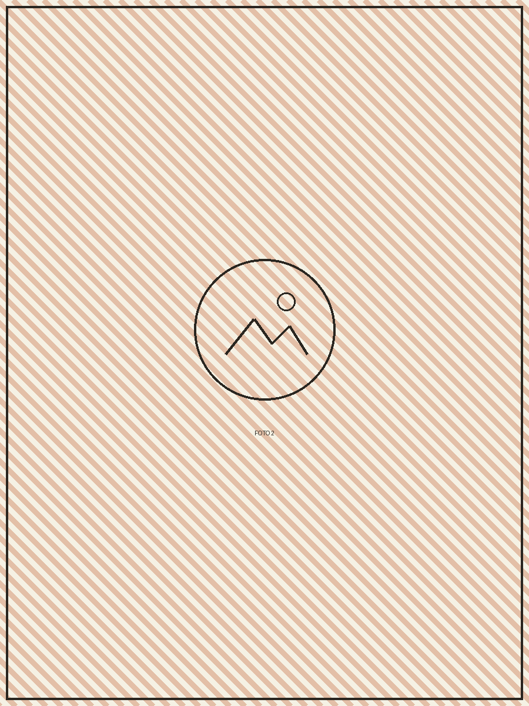
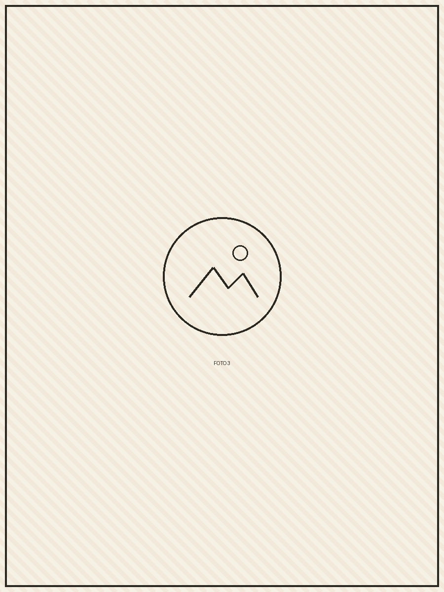

Mert Altintas
Ik zet ideeën om in digitale oplossingen. Met een passie voor development, design en gebruiksvriendelijke interfaces.
Junior Developer



About
Ik ben Mert.
27, uit Arnhem. Derdejaars HBO-ICT in Utrecht, begonnen op het MBO. Ik bouw met React Native, React en TypeScript, en ontwerp het liefst zelf wat ik daarna bouw.
Naast mijn studie werk ik freelance: websites voor ondernemers, en mijn eigen app ChoreShare. Geef me een probleem, dan krijg je een afgemaakt product terug. Geen half werk, geen buzzwords.
HBO-ICT, Hogeschool Utrecht
Freelance designer en developer
Boulderen
Films en series
Say hi
Zeg hoi.
Kies een optie op het menu. Een bericht sturen kan direct hier.